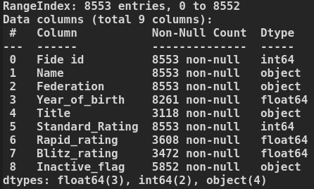
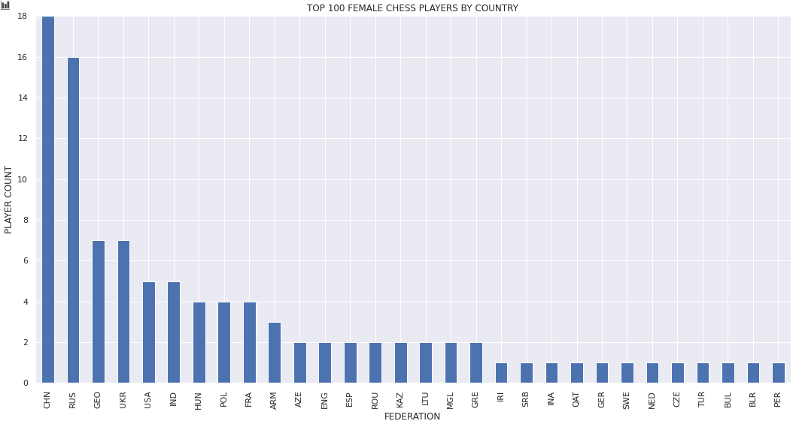

Top Female Chess Players EDA
*This is not an analysis report, just an example of informal data analysis.
This data contains information on the top female chess players in the world. The objective here is simply to practice looking at the data, to get a deeper understanding, and perhaps find some interesting insights along the way.

It seems the data-set consists of three player ratings from different formats along with some basic player information of 8,553 players. This will most likely be a short one.
Let's look at the distribution of standard format ratings:
A large grouping up-front with a harsh fall-off starting at around a rating of 2000. It falls with a tail ending at roughly 2600, indicating that getting a rating that high means you're one of the big-boys, or big-girls rather in this case. It's important to note the cutoff at 1800, meaning there is a large chunk of lower-rating players not present in the data.
How about the player spread across federations?
There are 124 unique federations, and this graph shows the top 15 by player count. I have divided the counts between the top 25% and bottom 75% of ranked players. As we can see here, there is a strong Russian presence in the female chess scene. In a not-so-close second, we see Germany with the second highest number of players in this group.
Top 100 Players by Federation:

Top 20 Players by Federation:
As we see here, China and Russia are dominant in the women's competitive chess scene at the upper echelons.
Now let's take a look the age (year_of_birth) distribution of the entire group:
The age distribution peaks at roughly 30-31 years old (as of 2020) (born 1989-1991). After that age, there is a steep drop followed by a long tail, possibly due to players moving onto the next stages of their lives and shifting their focus.
Lastly, we check out correlations for our data:
There is a slight negative correlation with player ratings and the decrease in year of birth. Put another way, younger people tend to rank lower. Of note is that blitz and rapid rating have a slightly stronger correlation with each other than they do with standard format.
Summary
In this short EDA we've found that Russia and Germany have a big presence in the women's competitive chess scene, and China and Russia have the largest representation within the top performers. We learned that there are players of all age ranges, but there is a noticeable spike at ages 28-32, with a steep drop-off older than that age-range. And finally, we learned that there is some correlation with increase in age and player rating.